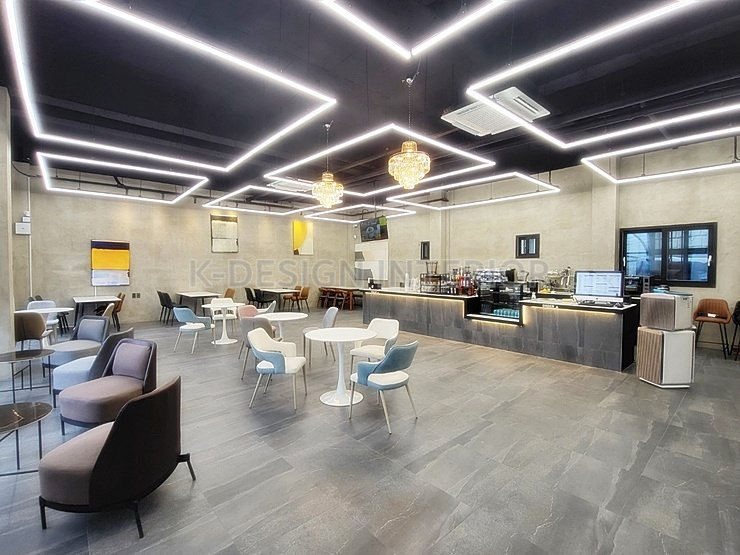

충남 아산 탕정면
탕정면
창업 인테리어
기존 탕정면 매장을 새 업종으로 바꾸거나 분위기만 바꾸고 싶을 때도 케이디자인에 상담해 보세요. 철거 범위를 줄여 비용을 아끼는 방법부터 찾습니다. 탕정산업단지와 신규 아파트 단지가 들어선 곳인 탕정면도 자주 상담합니다.

탕정면 현장 상담 안내
탕정면 매장 인테리어를 상담하면 케이디자인 대표 김명구가 직접 현장에 나가 실측합니다. 도면이 없어도 현장 치수로 설계를 시작할 수 있습니다.
아산은 배방읍·탕정면 같은 신규 아파트 단지와 온천동 원도심, 읍·면 지역의 단독주택이 함께 있는 도시입니다.
탕정면처럼 읍·면 지역은 1층 독립 상가, 식당, 사무실 공사가 많습니다. 외관과 주차 공간이 손님 첫인상을 좌우하므로 외관 리모델링도 함께 검토합니다.
사진으로 보는 상업공간 인테리어
케이디자인이 설계하고 시공한 현장입니다. 사진을 누르면 크게 볼 수 있습니다.
카페 좌석 라운지
포세린 타일, 라인 조명백석동 미용실
노출 천장, 라인 조명, 스타일링 존헤어·뷰티샵
원형 거울, 원목 카운터탕정면 상업공간 인테리어, 이렇게 준비하세요
아산 탕정면 현장을 상담할 때 함께 확인하는 내용입니다.
건물 공사 규정 확인
탕정면 상가 건물에 관리단이 있다면 공사 시간과 반입 규정을 먼저 확인합니다. 규정에 맞춰 시끄러운 공정의 시간을 조정합니다.
소방·안전 기준 검토
영업 신고나 허가가 필요한 업종은 소방·안전 기준을 미리 확인해야 합니다. 설계 단계에서 필요한 설비를 반영합니다.
손님 동선과 좌석 배치
입구에서 카운터, 좌석, 화장실까지 손님이 움직이는 길을 먼저 그리고 좌석 수를 정합니다. 동선이 정리되면 직원이 일하는 동선도 함께 편해집니다.
조명으로 분위기 만들기
같은 마감재라도 조명 계획에 따라 매장 인상이 크게 바뀝니다. 탕정면 매장도 업종 분위기에 맞춰 조명 종류와 색온도를 정합니다.
관리하기 쉬운 마감재
보기 좋은 마감재와 관리하기 쉬운 마감재는 다를 때가 많습니다. 두 가지를 놓고 장단점을 비교해 고르실 수 있게 합니다.
탕정면 현장 시공 범위
아산 탕정면 현장도 대표가 직접 방문해 실측하고, 디자인부터 마감까지 한 팀이 진행합니다.
- 외관 리모델링
- 상가, 매장
- 학원, 병원
- 카페, 음식점
- 필라테스 스튜디오
- 헤어샵, 뷰티샵
- 사무실
- 대표 직접 상담전화를 받은 사람이 현장에 나가고, 공사 마무리까지 확인합니다.
- 가까운 시공 지역아산 인근을 주로 시공해 탕정면 현장도 자주 들여다볼 수 있습니다.
- 한 팀이 끝까지설계와 시공을 같은 팀이 해서 처음 계획이 중간에 달라지지 않습니다.
상담부터 완공까지
첫 통화부터 완공 후 점검까지 같은 사람이 끝까지 챙깁니다.
전화 상담
원하는 공간, 예산, 일정을 들려주세요.
현장 실측
현장 치수와 배관·전기 위치를 확인합니다.
디자인과 견적
예산에 맞춰 조정할 항목을 함께 정합니다.
시공
공정이 바뀔 때마다 사진으로 알려드립니다.
완공과 점검
마감을 함께 확인한 뒤 인도합니다.
자주 묻는 질문
탕정면 상가 인테리어도 시공하나요?
네. 아산 탕정면 상가, 카페, 음식점, 사무실 등 상업공간 인테리어를 설계부터 시공까지 진행합니다.
탕정면 카페 인테리어도 가능한가요?
네. 카페 카운터, 좌석 배치, 조명, 외관까지 설계하고 시공합니다. 시공 사례의 카페 사진을 참고해 보세요.
어떤 업종의 매장을 시공했나요?
음식점과 카페, 헤어·뷰티샵, 운동 스튜디오, 상담 라운지까지 여러 업종을 시공했습니다.
탕정면 매장 인테리어 견적은 어떻게 받나요?
전화(010-6852-0300)로 업종, 평수, 희망 일정을 알려주시면 탕정면 현장을 방문해 실측한 뒤 디자인과 항목별 견적을 안내합니다.
아산 가까운 지역 상업공간 인테리어
- 상호
- 케이디자인
- 대표
- 김명구
- 시공 분야
- 주거공간, 상업공간 인테리어
- 시공 지역
- 충남 천안, 아산, 당진 / 경기 평택